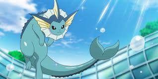
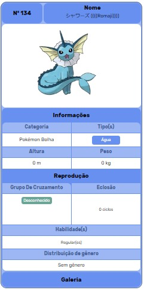

Classico Vaporeon
Vaporeon (em Japonês: シャワーズ Showers) e um Pokémon do tipo água introduzido na primera generação. é uma das evoluções posiveis do Eevee,
O corpo de Vaporeon é predominantemente azul. Tem orelhas amarelas e pontudas que ajudam a impulsionar quando ele mergulho, com o qual ele pode ouvir debaixo d'água. Tem uma barbatana de tubarão e na cabeça, e um colar branco no pescoço como um imperador. Tem picos escamosos na sua coluna que se estende ao longo de suas costas.
Diferenças de Genero
Não ha diferenças de genero no Vaporeon
Pokédex
Sua composição celular é semelhante às moléculas de água. Quando suas barbatanas começam a vibrar, é sinal que uma chuva está para cair. Ele pode fundir o seu corpo na água, ficando completamente invisível.
